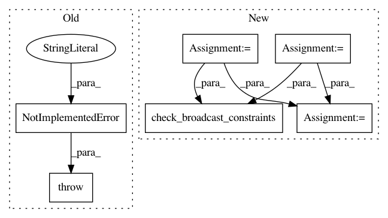

1ebebfab6869108667f3afced9a8ab70229887e7,src/graph_transpiler/webdnn/frontend/chainer/functions/math.py,,_convert_minimum,#Any#Any#,192
Before Change
@ChainerConverter.register_handler("Minimum")
def _convert_minimum(converter: ChainerConverter, c_op: "chainer.functions.Minimum"):
// TODO
raise NotImplementedError("[ChainerConverter] Minimum is not supported")
// noinspection PyUnusedLocal
@ChainerConverter.register_handler("ArgMax")
After Change
@ChainerConverter.register_handler("Minimum")
def _convert_minimum(converter: ChainerConverter, c_op: "chainer.functions.Minimum"):
x = converter.get_variable(c_op.inputs[0])
y = converter.get_variable(c_op.inputs[1])
check_broadcast_constraints(x, y)
tmp, = Greater(None)(x, y)
z = x * (1 - tmp) + y * tmp
converter.set_variable(c_op.outputs[0](), z)
// noinspection PyUnusedLocal
In pattern: SUPERPATTERN
Frequency: 4
Non-data size: 6
Instances
Project Name: mil-tokyo/webdnn
Commit Name: 1ebebfab6869108667f3afced9a8ab70229887e7
Time: 2017-11-30
Author: y.kikura@gmail.com
File Name: src/graph_transpiler/webdnn/frontend/chainer/functions/math.py
Class Name:
Method Name: _convert_minimum
Project Name: mil-tokyo/webdnn
Commit Name: 1ebebfab6869108667f3afced9a8ab70229887e7
Time: 2017-11-30
Author: y.kikura@gmail.com
File Name: src/graph_transpiler/webdnn/frontend/chainer/functions/math.py
Class Name:
Method Name: _convert_maximum
Project Name: mil-tokyo/webdnn
Commit Name: bf085c0fd5049b88110c6e63f96ef885bd354318
Time: 2017-12-12
Author: y.kikura@gmail.com
File Name: src/graph_transpiler/webdnn/frontend/onnx/defs/math.py
Class Name:
Method Name: _convert_min
Project Name: mil-tokyo/webdnn
Commit Name: bf085c0fd5049b88110c6e63f96ef885bd354318
Time: 2017-12-12
Author: y.kikura@gmail.com
File Name: src/graph_transpiler/webdnn/frontend/onnx/defs/math.py
Class Name:
Method Name: _convert_max